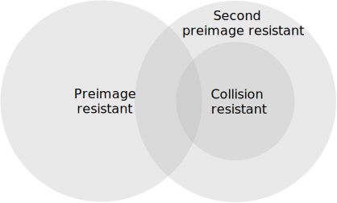
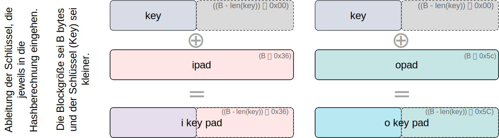
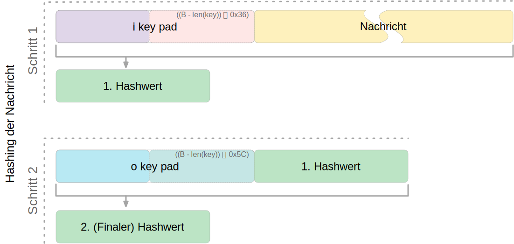
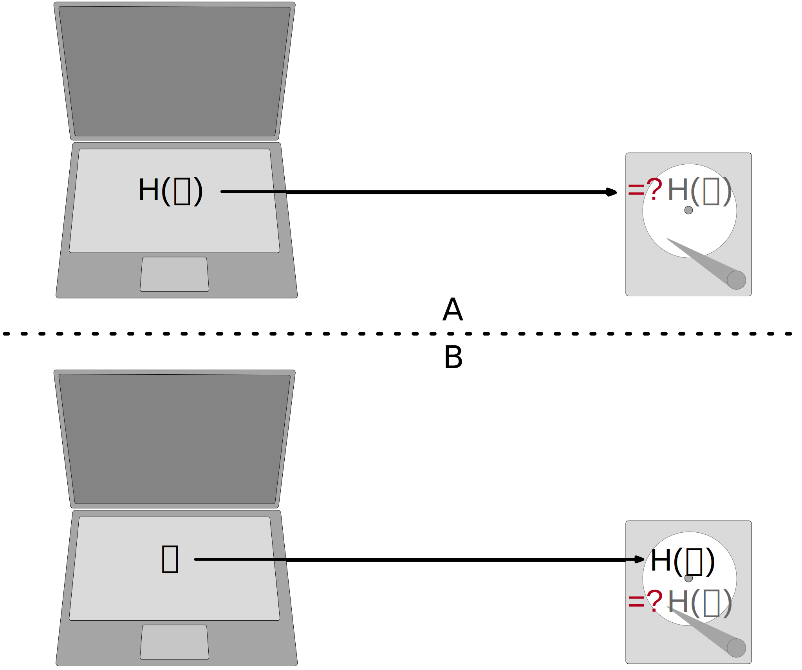
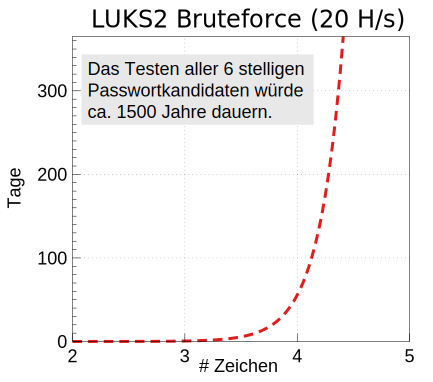
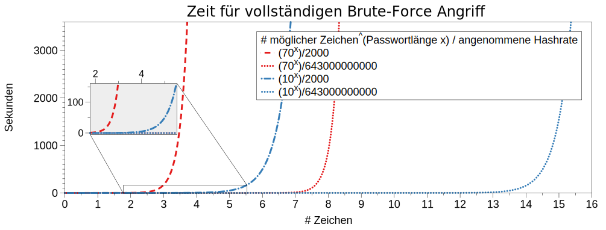

Wer hat Erfahrung mit Linux Kommandozeilenwerkzeugen für die Textverarbeitung?
Wer hat Erfahrung mit regulären Ausdrücken?
Wer hat Erfahrung mit Python?
Wer hat Erfahrung mit Java (Reverse Engineering)?
Was ist Passwortwiederherstellung?
Passwortwiederherstellung ist der Prozess, der dazu dient ein nicht (mehr) vorhandenes Passwort wiederzuerlangen.
Ist Passwortwiederherstellung noch relevant?
🛜
Klassische Passwörter werden (noch immer) in zahlreichen Bereichen verwendet. Beispiele sind Smartphones, Cryptosticks, Logins für Computer und Serversysteme, verschlüsselte Dateien und Datenträger.
Hintergrund
Obwohl an vielen Stellen versucht wird Passwörter aus vielen Gründen zurück zu drängen, so ist die Verwendung noch allgegenwärtig und in machen Bereichen ist auch nicht unmittelbar eine Ablösung zu erkennen.
Biometrie ist zum Beispiel in machen Bereichen kein Ersatz für Passwörter und wird - wenn überhaupt - nur ergänzend genommen. So ist es zum Beispiel im deutschen Recht erlaubt/möglich einem Beschuldigten sein Smartphone bei Bedarf vor das Gesicht zu halten, um es zu entsperren. Je nach Qualität des Fingerabdrucksensors können ggf. auch genommene Fingerabdrücke verwendet werden. Möchte der Beschuldigte jedoch das Passwort nicht freiwillige nennen, dann besteht keine direkte weitere Handhabe.
Wiederherstellung von Passwörtern mit unterschiedlicher Komplexität
Beurteilen Sie die Qualität der folgenden Passwörter in Hinblick darauf wie aufwändig es ist das Passwort wiederherzustellen:
Donaudampfschifffahrt
Passwort
ME01703138541
2wsx3edc4rfv
Haus Maus
iluvu
Emily18
MuenchenHamburg2023!!!!
hjA223dn4fw"üäKßß k`≤-~ajsdk
Baum Lampe Haus Steak Eis Berg
password123
Kryptografische Hashfunktionen und Passwörter
Hashfunktionen (Wiederholung)
Eine Hashfunktion \(H\) akzeptiert eine beliebig lange Nachricht \(M\) als Eingabe und gibt einen Wert fixer Größe zurück: \(h = H(M)\).
Wird oft zur Gewährleistung der Datenintegrität verwendet. Eine Änderung eines beliebigen Bits in \(M\) sollte mit hoher Wahrscheinlichkeit zu einer Änderung des Hashwerts \(h\) führen.
Kryptographische Hashfunktionen werden für Sicherheitsanwendungen benötigt. Mögliche Anwendungen:
Authentifizierung von Nachrichten
Digitale Signaturen
Speicherung von Passwörtern
Beispiel: Berechnung von MD5 Hashwerten
md5("Hello") = 8b1a9953c4611296a827abf8c47804d7
md5("hello") = 5d41402abc4b2a76b9719d911017c592
md5("Dieses Passwort ist wirklich total sicher
und falls Du es mir nicht glaubst, dann
tippe es zweimal hintereinander blind
fehlerfrei ein.")
= 8fcf22b1f8327e3a005f0cba48dd44c8
Kollisionen bei Hashes
Wenn ein Passwort nur als Hash gespeichert wird, dann gibt es zwangsläufig Kollisionen und es könnte dann theoretisch passieren, dass ein Angreifer (zufällig) ein völlig anderes Passwort findet, dass bei der Überprüfung des Passworts akzeptiert wird. Die Konstruktion kryptografischer Hashfunktionen stellt jedoch sicher, dass dies in der Praxis nicht auftritt.
Sicherheitsanforderungen an kryptografische Hashfunktion I
Pseudozufälligkeit:
Die Ausgabe von \(H\) erfüllt die Standardtests für Pseudozufälligkeit.
Einweg Eigenschaft:
Es ist rechnerisch/praktisch nicht machbar für einen gegeben Hashwert \(h\) ein \(N\) zu finden so dass gilt: \(H(N) = h\)
(Preimage resistant; one-way property)
Sicherheitsanforderungen an kryptografische Hashfunktion II
Schwache Kollisionsresistenz:
Es ist rechnerisch nicht machbar für eine gegebene Nachricht M eine Nachricht N zu finden so dass gilt: \(M \neq N\) mit \(H(M) = H(N)\)
Es ist rechnerisch unmöglich ein paar \((N,M)\) zu finden so dass gilt: \(H(M) = H(N)\).
(Collision resistant; strong collision resistant)
Hintergrund
Im Deutschen wird auch von Urbild-Angriffen gesprochen. In dem Fall ist preimage resistance (d.h. die Einweg Eigenschaft) gleichbedeutend damit, dass man nicht effektiv einen Erstes-Urbild-Angriff durchführen kann. Hierbei ist das Urbild die ursprüngliche Nachricht \(M\), die gehasht wurde.
Second preimage resistance ist dann gleichbedeutend damit, dass man nicht effektiv einen Zweites-Urbild-Angriff durchführen kann. Es ist nicht möglich zu einer Nachricht M eine zweite Nachricht N (d.h. ein zweites Urbild) zu finden, die für eine gegebene Hashfunktion den gleich Hash aufweist.
Beziehung zwischen den Sicherheitsanforderungen an Hashfunktionen

Anforderungen an die Resistenz von Hashfunktionen
Preimage Resistant
Second Preimage Resistant
Collision Resistant
Hash + Digitale Signaturen
✓
✓
✓
Einbruchserkennung und Viruserkennung
✓
Hash + Symmetrische Verschlüsselung
Passwortspeicherung
✓
MAC
✓
✓
✓
Hintergrund
Ein Kollisionsangriff erfordert weniger Aufwand als ein preimage oder ein second preimage Angriff.
Dies wird durch das Geburtstagsparadoxon erklärt. Wählt man Zufallsvariablen aus einer Gleichverteilung im Bereich von \(0\) bis \(N-1\), so übersteigt die Wahrscheinlichkeit, dass ein sich wiederholendes Element gefunden wird, nach \(\sqrt{N}\) Auswahlen \(0,5\). Wenn wir also für einen m-Bit-Hashwert Datenblöcke zufällig auswählen, können wir erwarten, zwei Datenblöcke innerhalb von \(\sqrt{2^m} = 2^{m/2}\) Versuchen zu finden.
Effizienzanforderungen an kryptografische Hashfunktionen
Effizienz bei der Verwendung für Signaturen und zur Authentifizierung:
Bei der Verwendung zur Nachrichtenauthentifizierung und für digitale Signaturen ist \(H(N)\) für jedes beliebige \(N\) relativ einfach zu berechnen. Dies soll sowohl Hardware- als auch Softwareimplementierungen ermöglichen.
vs.
Brute-Force-Angriffe auf Passwörter erschweren:
Bei der Verwendung für das Hashing von Passwörtern soll es schwierig sein den Hash effizient zu berechnen, selbst auf spezialisierter Hardware (GPUs, ASICs).
Bekannte Funktion zur Schlüsselableitung: PBKDF2, ...
Beim Hashing von Passwörtern werden die Basisalgorithmen in der Regel mehrfach (ggf. viele hunderttausend Male) angewendet, um die Laufzeit zu verlängern und es für Angreifer schwieriger zu machen.
Mehrere Hash-Algorithmen/Schlüsselableitungsfunktionen wurden ausdrücklich für das Hashing von Passwörtern entwickelt, um gängigen Angriffen zu widerstehen. Z.B. bcrypt, scrypt, Argon2.
Einige dieser Algorithmen sind so rechenintensiv, dass sie nicht für Webanwendungen/Situationen geeignet sind, in denen viele Benutzer gleichzeitig autorisiert werden müssen. Diese Algorithmen werden in der Regel zum Schutz von Dateien, Containern oder lokaler Festplatten verwendet.
Vom Salzen (Salt) ...
Beobachtung/Problem
Werden Passwörter direkt mit Hilfe einer kryptografischen Hashfunktion gehasht, dann haben zwei Nutzer, die das gleiche Passwort verwenden, den gleichen Hash.
Eine Regenbogentabelle (rainbow table) bezeichnet eine vorberechnete Tabelle die konzeptionell zum einem Hash ein jeweilig dazugehörendes Passwort speichert und einen effizienten Lookup ermöglicht. Dies kann ggf. die Angriffsgeschwindigkeit sehr signifikant beschleunigen.
Aufgrund der allgemeinen Verwendung von Salts sind Angriffe mit Hilfe von Regenbogentabellen heute nur noch von historischer Bedeutung.
Vom Salzen (Salt)...
Ein Salt sollte ausreichend lang sein (zum Beispiel 16 Zeichen oder 16 Byte).
Ein Salt darf nicht wiederverwendet werden.
Ein Salt kann zum Beispiel (am Anfang oder) am Ende an das Passwort angehängt werden bevor selbiges gehasht wird.
Ein Salt unterliegt (eigentlich) keinen Geheimhaltungsanforderungen.
Speicherung von Salts
In Webanwendungen bzw. allgemein datenbankgestützten Anwendungen wird der Salt häufig in der selben Tabelle gespeichert in der auch der Hash des Passworts gespeichert wird. Im Falle von verschlüsselten Dateien, wird der Salt (unverschlüsselt) mit in der Datei gespeichert.
... und Pfeffern (Pepper) von Passwörtern
(In Normen/Teilen der Literatur wird statt Pepper auch Secret Keys verwendet.)
Wie ein Salt geht auch der Secret Key in den Hashvorgang des Passworts ein.
Der Secret Key wird jedoch nicht mit den Hashwerten der Passworte gespeichert.
Ein Secret key kann zum Beispiel in einem Hardwaresicherheitsmodul (z.B. Secure Element oder TPM Chip) gespeichert werden. Gel. wird der Secret Key bzw. ein Teil davon auch im Code gespeichert.
Wie ein Salt sollte auch auch Secret Key mind. 16 Byte lang sein, um ggf. ein Brute-Force Angriff auf den Secret Key zu verhindern sollte dem Angreifer zu einem Hash und Salt auch noch das Klartext Passwort bekannt sein.
Der Secret Key sollte zufällig sein.
Der Secret Key sollte pro Instanziierung einer Anwendung einmalig sein.
Dient der Ableitung eines Schlüssels aus einem Passwort.
Das Ergebnis der Anwendung der PBKDF2 wird zusammen mit dem Salt und dem Iterationszähler für die anschließende Passwortverifizierung gespeichert.
die \(PBKDF2\) Schlüsselableitungsfunktion hat 5 Parameter \(DK = PBKDF2(\)PRF, Password, Salt, c, dkLen\()\):
PRF:
Eine Pseudozufallsfunktion; typischer Weise ein HMAC.
Password:
Das Masterpasswort.
Salt:
der zu verwendende Salt.
c:
Zähler für die Anzahl an Runden.
dkLen:
Die Bitlänge des abgeleiteten Schlüssels.
Die PBKDF2 ist nicht für das eigentliche Hashen zuständig sondern nur für das Iterieren der Hashfuntion und das eigentliche Key-stretching.
Laut OWASP sollten zum Beispiel für PBKDF2-HMAC-SHA512 600.000 Iterationen verwendet werden.
HMAC (Hash-based Message Authentication Code)
Auch als keyed-hash message authentication code bezeichnet.
\begin{align*}
\begin{array}{rcl}
HMAC(K,m) & = & H( (K' \oplus opad) || H( ( K' \oplus ipad) || m) ) \\
K' & = &\begin{cases}
H(K) & \text{falls K größer als die Blockgröße ist}\\
K & \text{andernfalls}
\end{cases}
\end{array}
\end{align*}
\(H\) is eine kryptografische Hashfunktion.
\(m\) ist die Nachricht.
\(K\) ist der geheime Schlüssel (Secret Key).
\(K'\) ist vom Schlüssel K abgeleiteter Schlüssel mit Blockgröße (ggf. padded oder gehasht).
\(||\) ist die Konkatenation.
\(\oplus\) ist die XOR Operation.
\(opad\) ist das äußere Padding bestehend aus Wiederholungen von 0x5c in Blockgröße.
\(ipad\) ist das innere Padding bestehend aus Wiederholungen von 0x36 in Blockgröße.


Padding und Hashing
Im Rahmen der Speicherung von Passwörtern und Secret Keys ist die Verwendung von Padding Operationen bzw. das Hashing von Passwörtern, um Eingaben in einer wohl-definierten Länge zu bekommen, üblich. Neben dem hier gesehenen Padding, bei dem 0x00 Werte angefügt werden, ist zum Beispiel auch das einfache Wiederholen des ursprünglichen Wertes, bis man auf die notwendige Länge kommt, ein Ansatz.
Diese Art Padding darf jedoch nicht verwechselt werden mit dem Padding, dass ggf. im Rahmen der Verschlüsselung von Nachrichten notwendig ist, um diese ggf. auf eine bestimmte Blockgröße zu bringen (zum Beispiel bei ECB bzw. CBC Block Mode Operations.)
HMAC Computation in Python
Implementierung
importhashlibpwd=b"MyPassword"stretched_pwd=pwd+(64-len(pwd))*b"\x00"ikeypad=bytes(map(lambdax:x^0x36,stretched_pwd))# xor with ipadokeypad=bytes(map(lambdax:x^0x5c,stretched_pwd))# xor with opadhash1=hashlib.sha256(ikeypad+b"JustASalt"+b"\x00\x00\x00\x01").digest()hmac=hashlib.sha256(okeypad+hash1).digest()
Im Fall von PBKDF2 ist der Schlüssel \(K\) also das Passwort und die Nachricht \(M\) das Salz.
Beispielcode
frompasslib.crypto.digestimportpbkdf2_hmacpbkdf2_hmac("sha256",secret=b"MyPassword",salt=b"JustASalt",rounds=1,# a real value should be >> 500.000keylen=32)
Bei einer Runde und passenden Blockgrößen ist das Ergebnis der PBKDF2 somit gleich mit der Berechnung des HMACs wenn der Salt um die Nummer des Blocks \x00\x00\x00\x01 ergänzt wurde.
In der konkreten Anwendung ist es ggf. möglich das Secret auch zu Salzen und den Salt aus einer anderen Quellen abzuleiten.
Nachgehakt
Ihnen liegt eine externer Festplatte/SSD mit USB Anschluss vor, die die folgenden Eigenschaften hat:
Die Daten auf der SSD/FP sind hardwareverschlüsselte Festplatte
Die Verschlüsselung erfolgt mit XTS-AES 256
Es gibt eine spezielle Software, die der Kunde installieren muss, um das Passwort zu setzen. Erst danach wird die Festplatte freigeschaltet und kann in das Betriebssystem eingebunden werden. Davor erscheint die SSD/FP wie ein CD Laufwerk auf dem die Software liegt.
Die SSD/FP ist FIPS zertifiziert und gegen Hardwaremanipulation geschützt; zum Beispiel eingegossen mit Epox.
Das Passwort wird von der Software gehasht und dann als Hash an den Controller der externen FP/SSD übertragen.
Im Controller wird der übermittelte Hash direkt zur Autorisierung des Nutzers verwendet. Dazu wird der Hash mit dem im EPROM hinterlegten verglichen.
Wie bewerten Sie die Sicherheit des Produkts?
Lösung
Wie in (A) dargestellt, ist die Sicherheit hier ausschließlich durch den Hardwareschutz gegeben. Sobald der Hash aus dem EPROM ausgelesen werden konnte, ist keine Sicherheit mehr gegeben. In (B) wird der Hash erst auf dem Gerät berechnet. Die gleiche Attacke würde hier nicht mehr funktionieren, da ein Übertagen des Hashes zu einem Hashen des Hashes führen würde und danach der Test fehlschlagen würde.

Passwortwiederherstellung 101
Passwortwiederherstellung
Wissen wo/in welcher Form der Passworthash zu finden ist.
Extraktion des Hashes
Wiederherstellung des Passwortes durch das systematische Durchprobieren aller Kandidaten.
Beispiel - Wiederherstellung eines Linux Login Passwortes
Im Falle von Linux Login Passworten ist genau spezifiziert wo die Passworte (/etc/shadow) und in welcher Form die Passworte gespeichert werden. Nach dem Namen des Nutzers (im Beispiel john) ist der verwendete Hashingalgorithmus vermerkt. Dieser unterscheidet sich zwischen den Distributionen. Aktuell setzen die meisten Distributionen jedoch auf yescrypt. Danach folgen die Parameter. Insbesondere der Salt.
ID
Mode
$5$
Sha256crypt (veraltet)
$6$
SHA512crypt (in Ablösung)
$y$ (or $7$)
yescrypt
Systematisches Testen aller Kandidaten
konzeptionell führt die Software Hashcat die folgenden Schritte durch:
Reguläre Wörter aus Wörterbüchern: Duden, Webster, …
Kontextinformationen:
Szenespezifisch: acab, …
Privates Umfeld: Namen von Kindern, Eltern, Hunden, Geburtsort, Adresse, …
Häufige Passworte
Eine gute Quelle für das Studium von Passwörtern sind sogenannte Leaks oder auch Listen mit gängigen Passwörtern. Zum Beispiel Becker's Health IT 2023:
123456
password
123456789
12345
12345678
qwerty
1234567
111111
1234567890
123123
abc123
1234
password1
iloveyou
1q2w3e4r
000000
qwerty123
zaq12wsx
dragon
sunshine
princess
letmein
654321
monkey
27653
1qaz2wsx
123321
qwertyuiop
superman
asdfghjkl
Hinweise
Die Listen ändern sich in der Regel von Jahr zu Jahr nicht wesentlich.
Herausforderung: Unmöglichkeit eines Brute-Force Angriffs auf Luks2

Herausforderung: Unmöglichkeit eines Brute-Force Angriffs auf lange Passworte

Herausforderung: stets neue Algorithmen
Angriff auf LUKS2 mit Argon2
[…] The choice of Argon2 as a KDF makes GPU acceleration impossible. As a result, you’ll be restricted to CPU-only attacks, which may be very slow or extremely slow depending on your CPU. To give an idea, you can try 2 (that’s right, two) passwords per second on a single Intel(R) Core(TM) i7-9700K CPU @ 3.60GHz. Modern CPUs will deliver a slightly better performance, but don’t expect a miracle: LUKS2 default KDF is deliberately made to resist attacks. […]
Sie wollen einen SHA 256 angreifen und sie haben 100 Nvidia 4090 GPUs. Jede GPU hat eine Hash-Rate von ~22GH/s (mit Hashcat 6.2.6) und benötigt ~500 Watt. Der verwendete Zeichensatz besteht aus 84 verschiedenen Zeichen (z.B. a-z, A-Z, 0-9, <einige Sonderzeichen>).
Wie lange dauert es, ein 10-stelliges Passwort zu ermitteln (Worst Case)?
Wie viel Geld wird es Sie kosten, ein 10-stelliges Passwort zu knacken (worst case) (1kW ~ 0,25ct)?
Werden Sie im Laufe Ihres Lebens in der Lage sein, ein Passwort mit 12 Zeichen zu ermitteln?
Es dauert ca. 3 Monate (~2200 Stunden), um ein Passwort mit 10 Ziffern zu ermitteln!
Es wird im schlimmsten Fall 27.000€ Stromkosten verursachen.
Um ein Passwort mit 11 Ziffern zu finden, brauchen Sie 21 Jahre (worst-case).
Um ein Passwort mit 12 Ziffern zu finden, brauchen Sie 21*84 Jahre (worst case).
Gedankenexperiment
Sie haben ganz viele Grafikkarten und einen sehr schnellen Hash. Sie kommen auf eine Hashrate von 1THash/Sekunde (\(1 \times 10^{12}\)). Sie haben einen Monat Zeit für das Knacken des Passworts.
Gehen Sie davon aus, dass Ihr Zeichensatz 100 Zeichen umfasst.
Berechnen Sie den Anteil des Suchraums, den Sie abgesucht haben, wenn das Passwort 32 Zeichen lang sein sollte. Drücken Sie den Anteil des abgesuchten Raums in Relation der Sandkörner der Sahara aus. Gehen Sie davon aus, dass die Sahara ca. 70 Trilliarden (\(70 \times 10^{21}\)) Sankörner hat.
Herausforderung: Passwortrichtlinien
Moderne Passwortrichtlinien (Password Policies) machen es unmöglich, ältere Leaks direkt zu nutzen.
Beispiele:
Mindestanzahl von Zeichen (maximale Anzahl von Zeichen)
Anforderungen an die Anzahl der Ziffern, Sonderzeichen, Groß- und Kleinbuchstaben
Anforderungen an die Vielfalt der verwendeten Zeichen
einige Passwörter (z. B. aus bekannten Leaks und Wörterbüchern) sind verboten
Keine Komplexitätsanforderung. Benutzer sollten auch die Möglichkeit haben, Leerzeichen einzufügen, um die Verwendung von Phrasen zu ermöglichen. Für die Benutzerfreundlichkeit [...] kann es von Vorteil sein, wiederholte Leerzeichen in getippten Passwörtern vor der Überprüfung zu entfernen.
Die Struktur von Passwörtern verstehen
Analyse auf Grundlage des berühmten Rockyou-Lecks.
Hier haben wir alle Kleinbuchstaben auf l, Großbuchstaben auf u, Ziffern auf d und Sonderzeichen auf s abgebildet.
Exemplarisch beobachteter Effekt wenn die Passwörter vorher einfacher waren und der Benutzer gezwungen wurde diese zu erweitern:
Password11##
Password12!!
D.h. die Passworte werden mit möglichst geringem Aufwand erweitert.
Aufbau von Passwörtern - Zusammenfassung
Passwörter, die häufig eingegeben werden müssen, basieren in den allermeisten Fällen auf echten Wörtern.
Echte Wörter werden oft nicht unverändert verwendet, sondern nach einfachen Regeln umgewandelt, z. B. durch Anhängen einer Zahl oder eines Sonderzeichens, Veränderung der Groß-/Kleinschreibung, etc.
Herausforderungen beim Testen/Generieren von Passwörtern
Aufgrund der Unmöglichkeit eines Brute-Force-Angriffs stellen sich folgende Herausforderungen:
Verfügbare Kontextinformationen sollten in die Auswahl/Generierung einfließen.
Es sollten nur technisch sinnvolle Passwörter getestet/generiert werden.
Es sollten keine Duplikate getestet werden.
Auswahl/Generierung von Passwörten in absteigender Wahrscheinlichkeit.
Die Auswahl/Generierung sollte effizient sein.
Technisch sinnvolle Passwörter sind solche, die die zu Grunde liegenden Passwortrichtlinien und auch weiteren technischen Anforderungen erfüllen. Zum Beispiel den von der Software verwendeten Zeichensatz (UTF-8, ASCII, ...) oder im Falle eines Smartphones/Krytosticks die eingebbaren Zeichen.
Sollte der Algorithmus zum Generieren der Passwörter langsamer sein als die Zeit, die benötigt wird, um ein Passwort zu falsifizieren, dann beschränkt nicht mehr länger nur die Hashrate den Suchraum.
Ansätze und Werkzeuge zum Generieren von Passwortlisten
Grundlegende Werkzeuge zum vermischen von Wörtern (Word-mangling)
Prince
Markov-Modelle (OMEN)
Hashcat
...
Um vorhandene Kontextinformationen zu erweitern, können ggf. (frei) verfügbare Wordembeddings verwendet werden.
RelatedWords.org setzt (unter anderem) auf ConceptNet und WordEmbeddings.
OMEN lernt - zum Beispiel basierend auf Leaks - die Wahrscheinlichkeiten für das Aufeinanderfolgen von Bigrammen und Trigrammen und nutzt diese, um neue Passwortkandidaten zu generieren.
Password Cracking Using Probabilistic Context-Free Grammars [PCFG]
Lernt die Muster, Worte, Ziffern und verwendeten Sonderzeichen basierend auf der Auswertung von realen Leaks. Die gelernte Grammatik wird als Schablone verwendet und aus Wörterbüchern befüllt. (Zum Beispiel: S → D1L3S2 → 1L3!! → 1luv!! )
Generiert Passwortkandidaten mit absteigender Wahrscheinlichkeit.
Prozeß:
Vorverarbeitung, um die Basisstrukturen und deren Wahrscheinlichkeiten zu identifizieren (z.B. zwei Ziffern gefolgt von einem Sonderzeichen und 8 Buchstaben.)
Passwortkandidatengenerierung unter Beachtung der Wahrscheinlichkeiten der Basisstrukturen und der Wahrscheinlichkeiten der Worte, Ziffern und Sonderzeichen.
(In der Originalversion wurden die Wahrscheinlichkeiten von Worten nicht beachtet; die auf GitHub verfügbare Version enthält jedoch zahlreiche Verbesserungen.)`
PCFG - Analyse - Beispiel
Im ersten Schritt werden die Produktionswahrscheinlichkeiten von Basisstrukturen, Ziffernfolgen, Sonderzeichenfolgen und Alpha-Zeichenfolgen ermittelt. (Z. Bsp.:
!cat123\(\Rightarrow\) S
1L
3D
3)
Basis Struktur
Häufigkeit
Wahrscheinlichkeit der Produktion
L3S1D3
12788
0.75
S1L3D3
2789
0.35
S1
Häufigkeit
Wahrscheinlichkeit der Produktion
!
12788
0.50
.
2789
0.30
@
1708
0.20
L3
Häufigkeit
Wahrscheinlichkeit der Produktion
cat
12298
0.85
dog
2890
0.15
D3
Häufigkeit
Wahrscheinlichkeit der Produktion
123
10788
0.60
321
5789
0.35
654
4708
0.25
PCFG - Generierung - Beispiel
Ergebnis der Analyse:
Nich-Terminale
Produktion
Wahrscheinlichkeit der Produktion
S
passwordT
0.7
S
secureT
0.3
T
123
0.6
T
111
0.4
Ableitung:
S \(\Rightarrow\)passwordT \(\Rightarrow\)password123
S \(\Rightarrow\)passwordT \(\Rightarrow\)password111
Unterstützt Tastaturwanderungen (zum Beispiel asdf oder qwerty12345), Passworte bestehend aus mehrerern Worten und wiederholten Worten (zum Beispiel qpqpqpq).
On Practical Aspects of PCFG Password Cracking [PAofPCFG]:
Im Wesentlichen Performanceoptimierungen, um PCFG schneller zu machen.
Using personal information in targeted grammar-based probabilistic password attacks [PIandPCFG]:
Im Wesentlichen werden zwei PCFGs gewichtet zusammengeführt (0 < alpha < 1).
SePass: Semantic Password Guessing Using k-nn Similarity Search in Word Embeddings [SePass]
Zusätzliche Wortkandidaten werden mithilfe von Worteinbettungen identifiziert. Ermöglicht es, automatisch verwandte Wörter zu finden.
Example
Gegeben:
Ferrari01
!Audi!
Mercedes88
Bugatti 666
"Offensichtliche" Kandidaten für Basiswörter:
Porsche
Mclaren
Lamborghini
Aston Martin
SePass: Semantic Password Guessing Using k-nn Similarity Search in Word Embeddings
Vermeidet menschliche Voreingenommenheit.
Example
Gegeben:
Luke2017
John1976
01Mark!
"Offensichtliche" Kandidaten für Basiswörter:
Matthew
Bible
Gospel
SePass: Semantic Password Guessing Using k-nn Similarity Search in Word Embeddings
Vermeidet menschliche Voreingenommenheit.
Example
Gegeben:
Luke2017
John1976
01Mark!
"Offensichtliche" Kandidaten für Basiswörter:
Leia
Darth Vader
Palpatine
Bewertung von Passworten
Donaudampfschifffahrt:
Ist weder in Rockyou noch im Duden und auch nicht in den Corpora von Twitter und Facebook von 2022 zu finden.
Passwort:
Nr. 93968 in Rockyou.
password123:
Nr. 1348 in Rockyou.
2wsx3edc4rfv:
So nicht in Rockyou, aber 1qaz2wsx3edc4rfv ist Nr. 143611 in Rockyou.
Haus Maus:
In Rockyou ist lediglich hausmaus zu finden.
iluvu:
Nr. 1472 in Rockyou.
Emily060218:
Emily ist Nr. 35567 in Rockyou. Die Zahl ist ganz offensichtlich ein Datum: 6. Feb. 2018 und könnte ein Geburtsdatum, Hochzeitsdatum, oder ein für die Person vergleichbar bedeutends Datum sein.
MuenchenHamburg2023!!!!:
Das Passwort ist zwar sehr lang aber es handelt sich vermutlich um zwei - für die entsprechende Person - bedeutende Orte. Die Zahl und die Sonderzeichen sind vermutlich auf eine Passwortrichtlinie zurückzuführen.
hjA223dn4fw"üäKßß k`≤-~ajsdk:
28 Stellen basierend auf einem Zeichensatz, der vermutlich ca. 192 Zeichen pro Stelle umfasst.
Baum Lampe Haus Steak Eis Berg:
Es handelt sich um ein Passwort mit 30 Stellen, dass vermutlich mit Hilfe von Diceware generiert wurde und 6 Worte umfasst.
ME01703138541:
Namenskürzel und Telefonnummer.
Diceware
Auch wenn dem Angreifer
(a) bekannt ist, dass das Passwort mit Hilfe von Diceware generiert wurde,
(b) die zugrundeliegende Wortliste vorliegt und
(c) auch die Länge (hier 6 Worte) bekannt sein sollte, dann umfasst der Suchraum: \((6^5)^6 \approx 2,21\times 10^{23}\) Passwortkandidaten. Sollte man also mit einer Geschwindigkeit von 1 Billion Hashes pro Sekunde angreifen können, dann brauch man noch immer über 7000 Jahre für das Absuchen des vollständigen Suchraums.
Beim klassischen Dicewareansatz umfasst das Wörterbuch \(6^5\) Worte, da man mit einem normalen Würfel fünfmal Würfelt und dann das entsprechende Wort nachschlägt. Würde man zum Beispiel die folgenden Zahlen würfeln: 1,4,2,5,2. Dann würde man das Wort zur Zahl: 14252 nachschlagen.
Zeichensatz
Auf einer deutschen Standardtastatur für Macs können in Kombination mit Shift, Alt und Alt+Shift zum Beispiel 192 verschiedene Zeichen eingegeben werden ohne auf Unicode oder Zeichentabellen zurückgreifen zu müssen.
Wörterbuchgenerierung - Evaluation von Werkzeugen
Werkzeuge und Methoden zur Wiederherstellung von Passwörtern
Im Folgenden diskutieren wir nur exemplarisch die Extraktion einiger Hashes, um das grundlegende Vorgehen zu besprechen. Im Allgemeinen gibt es für weit(er) verbreitete Software häufig bereits Lösungen zur Hashextraktion. Falls nicht, dann muss man Googeln und/oder Reverse Engineering betreiben.
Extraktion des Basishashes erfolgt auch hier (zum Beispiel) mit den John Tools. Danach muss sowohl der Prefix als auch der Suffix, der für die Entschlüsselung nicht relevant ist, abgeschnitten werden, wenn im Folgenden Hashcat verwendet werden soll.
Um zu verstehen, wie der Hash genau auszusehen hat, ist es im Allgemeinen hilfreich sich die erwartete Struktur für einen Hash anzusehen: Hashcat - Example Hashes
Verschlüsselte Mac Disk Images (.dmg)
In diesem Fall hat nur John (the Ripper) Unterstützung für den konkreten Hash.
Szenario 5: Kombination von Wörterbuch mit eigenem Regelsatz
Ausgangssituation
Wir greifen einen sogennanten langsamen Hash an und können deswegen nur wenige Passworte gezielt testen.
Aufgrund von Social Engineering/Ermittlungen wissen wir, dass die Person häufig kurze Worte (max 4 Buchstaben nimmt) diese aber oft verdoppelt und häufig die Worte mit einem Großbuchstaben anfangen lässt.
Angriff
Erstellen eines fokussierten Wörterbuchs: candidates.txt.
Erstellen des Regelsatzes: case.rule.
Angriff mit den erstellten Wörterbuch und dem Regelsatz.
Szenario 5: Kombination von Wörterbuch mit eigenem Regelsatz
Angriff
Generierung von candidates.txt
Um sicherzustellen, dass wir keine Duplikate testen, wandeln wir alle Worte in Kleinschreibung um und filtern entsprechende Duplikate. Die Beachtung aller Varianten in Hinblick auf die Groß- und Kleinschreibung wird durch die Regeln sichergestellt.
Die gezeigte Operation löst die Ordnung in der Datei auf und sortiert diese alphabetisch. Dies ist aber häufig nicht gewünscht - insbesondere wenn der Leak nach Verwendungshäufigkeit sortiert ist!
Szenario 5: Kombination von Wörterbuch mit eigenem Regelsatz
Angriff
Erstellen des Regelsatzes: case.rule
Um sicherzugehen, dass wir alle Varianten abdecken, brauchen wir drei Regeln.
cd
Erst Groß-Kleinschreibung anpassen und dann duplizieren.
dc
Erst duplizieren und dann Groß-Kleinschreibung anpassen.
d
Einfach nur duplizieren.
Angriff mittels Hahcat
hashcat-m1700hash.sha125candidates.txt-rcase.rule
Tips
Das beherrschen von regulären Ausdrücken ist bei der Passwortrekonstruktion sehr hilfreich.
Der folgende Ausdruck liefert zum Beispiel alle 4stelligen Worte aus Rockyou mit Hilfe eines Lookheads, dass längere Worte filtert.
Das Passwort TreeTree würde sich damit erfolgreich wiederherstellen lassen.
Szenario 6: Kartesiche Produkt von zwei Wörterbüchern
Ausgangssituation
Aufgrund von Social Engineering/Ermittlungen wissen wir, dass die Person sehr gerne zwischen deutschen Großstädten pendelt. Nachdem andere Versuche nicht zum Erfolge geführt habe, wollen wir jetzt Passworte der Art: "BerlinHamburg" testen.
Angriff
Erstellen eines fokussierten Wörterbuchs durch "Googeln" von großen Städten.
Angriff durch Kombination des Wörterbuchs mit sich selbst.
Es ist bekannt, dass die Passwörter der Gruppierung häufig mit vier Zahlen und zwei Sonderzeichen aus einer sehr kleinen Mengen von Sonderzeichen ($!.) enden. Davor kommt ein Wort mit ca. 4-8 Stellen in den typischerweiser "liebe/love/luv" vorkommt.
Angriff
Erstellen eines fokussierten Wörterbuchs: candidates.txt
Angriff mit passendem Maskenangriff
Szenario 7: Wörterbuch mit Maske
Angriff mit Hybridangriff
candidates.txt enthält alle Begriffe aus rockyou, die die Anforderung erfüllen:
In diesem Falle verwenden wir einen Hybridangriff, der eine Wordliste mit einer Maske kombiniert. Hier definieren wir unseren eigenen Zeichensatz mit dem Parameter -1'$.!' und referenzieren diesen in unserer Maske später mit ?1.
Ein Beispielpasswort, dass wir mit dem Ansatz ermitteln könnten, wäre:
SHA256
Passwort
b9cace43df57bc694498bf4d7434f45a
8466c4a924f608d54fd279d24b3dc937
ILuvU2023!!
Szenario 8: Passwörter mit Muster
Ausgangssituation
Wir möchten ein Wörterbuch erstellen mit Wörtern, die Buchstabenvervielfältigungen enthalten, aber nicht länger als 16 Zeichen sind. Zum Beispiel: "aaaaBBBBcccc" oder auch "AFFFFFE".
Weiterhin soll die Liste nach der Länge der gefundenen Einträge aufsteigend sortiert sein und Zeichen, die keine Buchstaben sind, einfach gelöscht werden.
Lösung
Heraussuchen entsprechender Wörter aus rockyou mittels Linux Kommandozeilenwerkzeugen.
Sortierung der finalen Liste nach nach der Häufigkeit der Muster, angefangen mit dem häufigsten Mustern.
Szenario 9: Passwörter bestehend aus Fragmenten
Ausgangssituation
Einer gegebenen Liste können wir nur entnehmen, dass alle Passwörter zusammengesetzt sind aus den Fragmenten: ab, mem, li und xy.
Darüber hinaus ist immer eine Zahl vorangestellt und am Ende kommt ein Punkt (.) oder ein Ausrufezeichen (!).
Die Länge scheint zwischen 6 und 16 Zeichen zu sein und Fragmente können sich wiederholen.
Beispiel: 1ablixyxy.
Vorgehen
Erstellen eines Basiswörterbuchs (base.txt) mit den Fragmenten als Einträge.
Erstellen von Regeln für das Voranstellen und Anhängen der entsprechenden (Sonder)zeichen.
Aus Basiswörterbuch das finale Wörterbuch für den Angriff generieren.
Mit dem finalen Wörterbuch und entsprechenden Regeln angreifen.
Szenario 9: Generierung von Wörterbüchern aus Fragmenten
Lösung
Zu Generierung aller Kombinationen aus den Fragmenten verwenden wir den Princeprocessor. Der Princeprocessor ist sehr schnell und ermöglicht es in Fällen die Ausgabe direkt an Hashcat durchzureichen und das Zwischenwörterbuch nicht explizit speichern zu müssen.
In diesem Falle wäre es auch möglich gewesen nur einen Regelsatz zu erstellen mit den passenden Regeln (zum Beispiel: ^1$., ^1$!, ...) der Aufwand wäre hier jedoch höher gewesen und hätte keinen Nutzen gehabt.
Im Allgemeinen ist jedoch bei der Verwendung des Kreuzproduktes von Regeln immer darauf zu achten, dass keine (oder zumindest keine relevante Anzahl von) Regeln dupliziert werden. Ein Beispiel wäre das Kreuprodukt aus einem Regelnsatz für das optionale Anhängen einer Ziffer mit sich selbst. Sei der Regelsatz:
:
$1
$2
und würde man diesen mit sich selber kombinieren, um alle Fälle des Anhängens von keiner, einer bzw. zwei Zahlen abzudecken, dann würden folgende Regeln entstehen:
::
:$1
:$2
$1$1
$1$2
$2$1
$2$2
$1:
$2:
Wie zu erkennen ist, führen zum Beispiel die Regeln $1: und :$1 jeweils zum gleichen Ergebnis und wären deswegen nicht effektiv.
Szenario 10: Hashcat als Werkzeug zur Wörterbuchgenerierung
Ausgangssituation
Gegeben sein 3 Wörterbücher [1]: base1.txt, base2.txt und base3.txt. Gesucht ist ein Wörterbuch, dass alle Kombinationen aus den drei Wörterbüchern enthält und bei dem alle Teilworte immer mit Sonderzeichen (-) voneinander getrennt sind.
Beispiel
Sei base1.txt: "Kuh", "Schwein"; base2.txt: "Haus", "Villa" und base3.txt: "Baum", "Busch". Dann wäre das gesuchte Wörterbuch: "Kuh-Haus-Baum", "Kuh-Haus-Busch", ..., "Schwein-Villa-Busch".
Vorgehen
Erzeugen des Kreuzprodukts der ersten beiden Wörterbücher.
Die Hashcat Utilities Bibliothek hat auch noch weitere Werkzeug zum Kombinieren von Wörterbüchern, die viele Fälle sehr effizient abdecken (auch den besprochenen). Jedoch ist es gerade in Fällen, in denen komplexere Regeln zur Anwendung kommen sollen, häufiger sinnvoller/nowendig direkt Hashcat im "stdout" Modus zu verwenden, um die Zwischenwörterbücher zu generieren.
Passwörter angreifen - Zusammenfassung
Passwörter können vielfach effizient angegriffen werden.
(gute bis exzellente) Kenntnisse über die Zielpersonen sind häufig notwendig.
Viele Werkzeuge sind verfügbar (siehe auch Hashcat Werkzeuge, Princeprocessor, John the Ripper, etc.)
Kleine etablierte Kommandozeilenwerkzeuge (tr, greb, sed, awk, ...) oder selbstentwickelte Werkzeuge (zum Beispiel in Python) sind häufig ergänzend notwendig und führen oft schneller zum Ziel als die Suche nach dem Tool.
Insbesondere wenn es um die semantische Anreicherung von Wörterbüchern geht, dann sind (bisher) keine etablierten Werkzeuge vorhanden.
Häufig führen nur Kombinationen von etablierten und eigenen Werkzeugen zum gewünschten Ziel.
SePass: Semantic Password Guessing Using k-nn Similarity Search in Word Embeddings; Maximilian Hünemörder, Levin Schäfer, Nadine-Sarah Schüler, Michael Eichberg & Peer Kröger, ADMA 2022: Advanced Data Mining and ApplicationsSpringer LNAI, volume 13726
S. Aggarwal, M. Weir, B. Glodek and B. Medeiros, "Password Cracking Using Probabilistic Context-Free Grammars," in 2009 30th IEEE Symposium on Security and Privacy (SP); doi: 10.1109/SP.2009.8
S.Houshmand, S. Aggarwal and R. Flood, "Next Gen PCFG Password Cracking," in IEEE Transactions on Information Forensics and Security, vol. 10, no. 8, pp. 1776-1791, Aug. 2015, doi: 10.1109/TIFS.2015.2428671.
Hranický, R., Lištiak, F., Mikuš, D., Ryšavý, O. (2019). On Practical Aspects of PCFG Password Cracking. In: Foley, S. (eds) Data and Applications Security and Privacy XXXIII. DBSec 2019. Lecture Notes in Computer Science(), vol 11559. Springer, Cham. https://doi.org/10.1007/978-3-030-22479-0_3
Houshmand, S., Aggarwal, S. (2017). Using Personal Information in Targeted Grammar-Based Probabilistic Password Attacks. In: Peterson, G., Shenoi, S. (eds) Advances in Digital Forensics XIII. DigitalForensics 2017. IFIP Advances in Information and Communication Technology, vol 511. Springer, Cham. https://doi.org/10.1007/978-3-319-67208-3_16